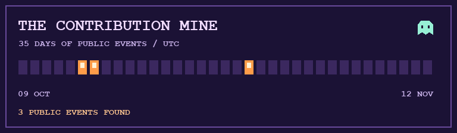

The Midnight
Observatory
Abhinav Rastogi · Founding engineer at Neander
Explore the rooms. Find three seals to open the vault.
Abhinav Rastogi · Founding engineer at Neander
Explore the rooms. Find three seals to open the vault.
Someone scratched three symbols into the vault door. The garage, tower and mine each hide one.
Every drawer says “misc.” One of them is humming.
Rotate the telescope until it finds the blue moon.
Sightline · rooftops
The lantern is out. Light it to see a dated snapshot of public GitHub events.

“I hold uncommitted changes. I can pop without making a sound. What am I?”
You found the workshop log. It reads: “If the house is quiet, check the build logs.”
Explore the public repositories →